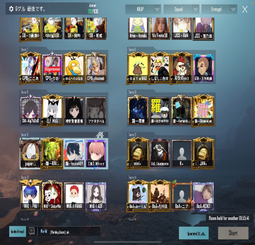

私の趣味 ～PUBGmの所属クラン｢羅｣～
クランの活動内容②


4. スクリム・大会活動
PUBG Mobile界隈では、普段のマッチよりもさらにレベルの高い試合をしたいという方に向けて、スクリムという練習試合が行われています。 当クランでは希望者を募集し、チームとして活動を行い、このようなスクリムや大会に参加しております。スクリム参加から また、スクリム参入から1年弱が経過し、クラン内の参加希望者が増加したこともあり、現在は2チーム体制で活動を行っております。
スクリムチーム：羅〜東門〜
主に、大学生がメインで活動を行っているチームです。メンバー一人一人の個性が強く、明るいチームです。試合では、盤面上から最適な行動を予測・判断し、ドン勝までの道のりを作り出します。
参加スクリム・大会
C3J，Union Second，Soleil Scrim，PMUS(旧わせりむ)， コースケ杯，その他賞金ルーム
実績
C3J グループ総合優勝 1回
Union Second グループ総合優勝 2回
Union Second Aグループ出場多数
Union Second 最高レート順位 22位
スクリムチーム：羅〜西門〜
中学生から社会人まで様々な年齢の方で活動を行っているチームです。多くのメンバーが在籍しており、年齢に関わらず仲の良いチームです。試合時は、メンバーが固定ではないが故に、多彩な戦略を持ち、ドン勝までの道を切り開きます。
参加スクリム・大会
C3J Union Second Soleil Scrim コースケ杯 その他ルーム
実績
Union Second ドン勝獲得多数
C3J ドン勝獲得多数
コースケ杯 TPP部門 総合3位 FPP部門 総合4位